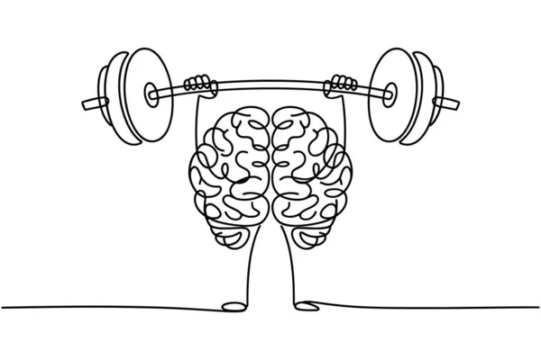

Salud Mental: La Neurobiología del Bienestar

1. Fundamentos Neurobiológicos
La salud mental es el resultado de una compleja interacción entre la genética, el entorno y la neuroquímica. A diferencia de lo que se creía antiguamente, los trastornos mentales no son "debilidades de carácter", sino alteraciones en el funcionamiento de circuitos neuronales específicos.
El sistema límbico (que incluye la amígdala y el hipocampo) es el principal centro de procesamiento emocional. Cuando existe una desregulación en la comunicación entre la corteza prefrontal (encargada del juicio) y la amígdala (encargada de las emociones), aparecen dificultades para regular el estado anímico.
2. Neuroquímica y El Estado de Ánimo
La estabilidad emocional depende de una red precisa de neurotransmisores:
- Serotonina (5-HT): Además de regular el ánimo, es fundamental para el ciclo sueño-vigilia y el control de impulsos. Niveles disfuncionales están ligados a la depresión y trastornos obsesivo-compulsivos.
- Dopamina (DA): Actúa en el sistema de recompensa. Su correcta gestión es vital para evitar conductas adictivas y mantener el enfoque.
- GABA: Es el principal neurotransmisor inhibidor del sistema nervioso; ayuda a reducir la excitabilidad neuronal, funcionando como un "freno" natural contra la ansiedad.
- Noradrenalina: Modula la atención y las respuestas de "lucha o huida".
3. Eje Intestino-Cerebro: La Segunda Mente
Datos científicos recientes han demostrado que el sistema nervioso entérico (ubicado en el tracto gastrointestinal) se comunica constantemente con el cerebro a través del nervio vago. Existe una microbiota intestinal que produce el 90% de la serotonina corporal, lo que sugiere que nuestra alimentación tiene un impacto directo e inmediato en nuestra salud mental.
4. Datos de Alto Impacto Científico
- Neurogénesis: Contrario a mitos antiguos, el cerebro adulto sí es capaz de generar nuevas neuronas en áreas como el hipocampo, especialmente a través del ejercicio aeróbico.
- Impacto del Estrés Crónico: El cortisol elevado puede provocar una atrofia dendrítica en la corteza prefrontal, afectando nuestra capacidad de toma de decisiones y atención a largo plazo.
- Sueño y Limpieza Cerebral: Durante la fase de sueño profundo, el sistema glinfático del cerebro se activa para "limpiar" proteínas tóxicas (como la beta-amiloide), un proceso esencial para prevenir el deterioro cognitivo.
5. Neuroplasticidad y Resiliencia
A nivel biológico, la resiliencia es el resultado de fortalecer la comunicación entre dos estructuras clave del cerebro:
- La Amígdala: Actúa como el sistema de alarma emocional; se enciende automáticamente ante el estrés, el miedo o la crisis.
- La Corteza Prefrontal: Es el centro del pensamiento racional y funciona como el "freno" emocional.
¿En qué ayuda esta conexión fuerte?
- Frena el "secuestro emocional": Evita que el miedo o el enojo bloqueen tu capacidad de pensar, impidiendo que actúes por puro impulso.
- Recuperación veloz: Reduce el tiempo que pasas estresado o angustiado después de un mal momento; tu cuerpo regresa a la calma mucho más rápido.
En resumen: Ayuda a que dejes de reaccionar con drama y empieces a responder con estrategia.
6. El impacto de la hiperestimulación digital
La exposición constante a pantallas y juegos de ritmo acelerado (como Roblox o Word Bomb) satura el sistema de recompensa del cerebro:
- Micro-recompensas inmediatas: Cada estímulo visual rápido o palabra acertada a contrarreloj dispara una ráfaga instantánea de dopamina.
- Fatiga prefrontal: Esta sobreestimulación agota la corteza prefrontal, lo que debilita tu capacidad para concentrarte y hace que las actividades más lentas (como estudiar) se sientan aburridas o frustrantes.
¿De qué sirve saber esto? (Beneficios prácticos):
- Evita la fatiga mental: Al saber que los estímulos rápidos agotan tu corteza prefrontal, entiendes por qué te cuesta concentrarte después de jugar o usar redes, permitiéndote planificar tus descansos.
- Mejora tu control emocional: Proteger tu cerebro de la sobreestimulación mantiene fuerte el "freno" de la corteza prefrontal, haciéndote menos propenso a la irritabilidad, la ansiedad o la impaciencia.
Consecuencias de la Sobrecarga de Dopamina:
- Pérdida de enfoque: Te cuesta mantener la atención en tareas lentas (como estudiar o leer) porque tu cerebro se acostumbra a la velocidad extrema.
- Cero tolerancia a la frustración: Te vuelves más impaciente y te rindes o te enojas más rápido ante cualquier problema.
7. Neurotransmisores y Aprendizaje
Para que el cerebro aprenda y guarde información, necesita de estos cuatro mensajeros químicos:
- Dopamina: Genera la motivación para empezar a aprender y le avisa al cerebro qué información es importante recordar.
- Acetilcolina: Enciende el enfoque y la atención sostenida, permitiendo que la información entre limpia al cerebro.
- Glutamato: Es el motor de la plasticidad cerebral; se encarga de reforzar físicamente las uniones entre neuronas cada vez que practicas algo.
- Serotonina: Calma la ansiedad y regula el estado de ánimo, creando el ambiente mental perfecto para que el cerebro no se bloquee.